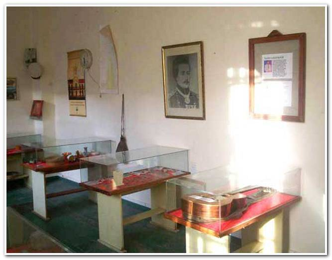

SANTA ROSA DEL CONLARA
Bienvenidos A Santa Rosa Del Conlara.
Lugares turísticos
- COMPLEJO MUNICIPAL RIO CONLARA
- MUSEO POLIFACÉTICO MUNICIPAL VIEJA USINA
- PARQUE PROVINCIAL BAJO DE VÉLIZ
- CASINO TROPICANA
- PARAJE PUNTA DEL AGUA
- PARAJE LOS LOBOS
- QUEBRADA DE CAUTANA
- ESTACION DE FERROCARRIL ADOLFO RODRIGUEZ SAA
Ubicado sobre Río Conlara, en la localidad de Santa Rosa del Conlara. Se llega al lugar por camino de asfalto, sitio en muy buen estado de conservación. Señalización en todo el predio. Quincho con asadores, hospedaje y proveeduría. Se puede tomar sol, baños y realizar caminatas. Es el balneario más grande de la provincia, de aguas cálidas tan especial por ser uno de los pocos en el mundo, cuyo cauce corre de sur a norte, es uno de los más amplios y mejor dotados de la provincia. Este balneario cuenta con una extensión aproximada de 16 has., con más de 500 mts. de playas de distintas profundidades. Creado y construido por Henry Funes. Muro construido a gravedad en piedra apoyada en afloramiento rocoso, su altura es de 1,80 mts. Esta obra fue realizada en 1960. El puente carretero fue colocado en 1922. Su muro y las barrancas están revestidos en piedra

Ubicado en la localidad de Santa Rosa del Conlara sobre calle Aviador Franco Nº 862. Camino de asfalto. Sitio en muy buen estado de conservación. Servicios básicos disponibles. Esta constituido en el interior por lo que fuera antes, la Vieja Usina de generación de electricidad de la Localidad, dentro del mismo aun se conservan sus motores generadores, se exhiben instrumentos, objetos personales, minerales, fotografías, restos fósiles de nativos, monedas y billetes, maquinas de escribir, animales embalsamados, cueros, cuadros, valijas de época, objetos históricos de la vida cotidiana de pobladores; en el lugar funciona también la Oficina de Informes Turísticos.
Hace millones de años el Bajo formó parte del continente de Gondwana, constituido por lo que hoy es África, una parte de América del sur, la Antártida y la India, dejando notables evidencias de ello. Este parque es una verdadera puerta al pasado más remoto donde los amantes de la paleontología, la arqueología y los orígenes de la vida encontrarán tesoros de más de 268 millones de años. Un poco historia local. En el bajo existe una población rural que comprende unas 23 familias, totalizando unas cien personas que viven en casas y ranchos dispersos, dedicados a la ganadería de caprinos y agricultura de huerta para consumo propio. El nombre del bajo proviene del apellido de sus primeros pobladores criollos, la familia Vélez. Próxima a la cantera se encuentra la casa de uno de sus descendientes. Creado en 1989, el Parque Provincial de Bajo de Veliz cuenta con una superficie de 6.000 has. Es una depresión angosta de 12 km de largo (norte- sur) y un ancho que varía entre los 200 m y los 2 km. Ubicada a 597 m.s.n.m., la rodean cordones serranos que alcanzan una altura de 900 msnm. Senderos: Sendero del Guayacan: donde se encuentra este único ejemplar rodeado de un bosque de añosos quebrachos blancos que se erigen por sobre el resto de la vegetación. Sendero de Los morteros y el arroyo: El arroyo recorre el valle central y constituye la fuente de vida de la zona, a la vera del mismo pueden divisarse viviendas de pobladores, gran variedad de ganado doméstico y aves de corral. Tallados en bloques de piedra se han hallado vestigios aborígenes representados principalmente por morteros. Cercanos al agua, sobre las paredes de roca, protegidos del sol, pueden verse líquenes rupícolas, musgos y helechos. Una investigación aseguraba que en la zona se había hallado el fósil de la araña más grande que alguna vez había caminado por el planeta. La reserva se caracteriza por su riqueza ornitológica. Se han registrado más de 50 especies de aves. Mucha paz y naturaleza para disfrutar en familia.

Santa Rosa del Conlara, San Luis

Punta del Agua lleva este nombre porque hasta allí llegaba el agua del río Conlara que servía para sembrar los regadíos de la zona. En el paraje Punta del Agua a 20 km de la localidad de Santa Rosa del Conlara nos encontramos la Capilla Virgen de las Mercedes o de los Funes, ubicada en el extremo norte provincial fue declarada Patrimonio Histórico Cultural de la Provincia de San Luis. Esta capilla fue construida entre finales del 1600 y principios del 1700. Fue reparada en 1897 y es fiel testigo de malones y batallas que marcaron la identidad regional. Vecinos aseguran que el tañido de sus campanas se escucha a seis kilómetros de distancia. En el interior, sus paredes son totalmente blancas y en ellas cuelgan pequeños cuadros que cuentan la vida de Cristo. En el frente, majestuosa, se encuentra sobre el atrio y entre flores la imagen de la Virgen de Nuestra Señora de las Mercedes y los otros dos santos. Al levantar la mirada se puede observar el techo a dos aguas que es sostenido por los tirantes de madera. La disposición consiste en un tirante central del cual se sostienen 33 más a los costados y que le dan la forma de techo en agua. Las 33 vigas de madera significan la edad de Jesucristo. Son de algarrobo, el árbol que predomina en la zona. Es una madera dura y, según cuenta Antonio, hace trescientos años para darles forma se utilizaban hachas; si se ve en detalle se pueden apreciar las marcas de la herramienta en cada uno de los cortes de los tirantes.
Los Lobos es una interesante paraje aledaño a la localidad de Santa Rosa del Conlara; desconocido incluso para los mismos puntanos, que guarda celosamente en sus serranías un yacimiento de arte rupestre como testimonio de las antiguas poblaciones que vivieron en el nordeste de San Luis. El yacimiento está ubicado en un paraje llamado Cueva del Indio. Cruzando el arroyo Indio Muerto a 200 metros. También llamada Quebrada de los Pérez. En el yacimiento hay una pequeña cueva, donde caben dos personas agazapadas, con numerosas pictografías que dejaron estampadas en piedra los nativos del extenso valle del Conlara. Visitar el yacimiento arqueológico Los Lobos y el Museo Regional de Santa Rosa del Conlara, representa una muy buena experiencia cultural para conocer las huellas de nuestros ancestros que lograron perdurar en el tiempo.En este yacimiento se han encontrado restos arqueológicos como utensilios, puntas de flechas, boleadoras. El material arqueológico, incluso esqueletos humanos en posición fetal, rescatado en Los Lobos se encuentra preservado en el Museo de la Vieja Usina en Santa Rosa del Conlara. Se accede a Los Lobos transitando 18 kilómetros por la Ruta Provincial Nº 23 hasta dar con el destacamento policial. Desde allí se continúa por un camino vecinal que lleva a la propiedad de la familia Pérez, según consigna el Atlas Turístico de San Luis.
Espacio de maravillosa geografía que atraviesa la Sierra de San Luís, la Quebrada de Cautana, posee originales formaciones rocosas, imponentes paredones, y un paisaje que en conjunto aparece silencioso y agreste. El arte rupestre, principal atractivo de este lugar, permite apreciar figuras geométricas, animales, petroglifos realizados mediante la técnica de picoteado continuo. Se le atribuye a este una antigüedad aproximada de 6 mil años. La Quebrada de Cautana se alza en cercanías al Bajo de Veliz. Se accede a ella desde Santa Rosa transitando unos 25 Kms. por rutas provinciales
Abuelo del actual y el ex gobernador. En este lugar se filmó parte de la Película "Un lugar en el Mundo". Protagonistas: Federico Luppi, Leonor Benedetto, Hugo Arana, Rodolfo Ranni, Jóse Sacristan, Cecilia Roth, entre otros, con extras del valle del Conlara.
plaza mas visitada en santa rosa del conlara, San Luis

La edición número 30 de este festival contó con la presencia de artistas y ballets locales. Actuaron Los Sacheros, Alma Carpera, Los Caldenes, Chacho Peralta, Ivotí y Pitín Zalazar. Se realizó un homenaje en reconocimiento a los primeros locutores y conductores del festival, donde no faltaron lágrimas de emoción. Todos los ballets de la localidad tuvieron la oportunidad de desplegar su arte en el escenario mayor como reconocimiento a su labor constante. La intendenta de Santa Rosa del Conlara, Marta Ponce, contó: “Estamos cumpliendo el 30° aniversario de nuestro festival. Es una noche maravillosa, con muchísima gente presente, no sólo de nuestra zona, sino también de lugares más alejados. Estamos muy agradecidos al Gobierno de la provincia por acompañarnos, en especial, con la seguridad y el área de turismo”. Santa Rosa está viviendo una buena temporada turística. Horas antes del festival se emitió un comunicado, por parte del municipio, avisando que ya no quedaban más lugares para acampar dentro del Complejo “Río Conlara”. Dicho balneario, gracias a su flujo de agua constante, las comodidades que brinda y las opciones gastronómicas que acompañan, se posicionó esta temporada como uno de los principales atractivos turísticos del norte puntano. Tanto locales como turistas disfrutaron de la fiesta. Algunos llegaron especialmente y otros la descubrieron por sorpresa. Melina y Santiago son de José C. Paz, Buenos Aires, y llegaron al balneario de Santa Rosa siguiendo al malón de gente, sin saber con lo que se encontrarían. “Le dije a Melina: ‘Mirá la gente está yendo hacia allá, vamos’”, contó Santiago entre risas, “Y cuando llegamos nos encontramos con este festival”. Melina visita desde muy chica Santa Rosa, y se queda en la casa de los abuelos: “A mí me encanta porque me gusta más la sierra, la montaña y el río que la playa. Este lugar tiene su encanto, es un pueblito re tranquilo, muy recomendable”, afirmó Melina. El éxito de la fiesta, también se vió reflejado en los puestos gastronómicos que se quedaron sin mercadería antes de que termine la noche, tanto los que venden sus productos hace tiempo como los nuevos que recién están comenzando, resaltaron las buenas ventas que tuvieron durante toda la noche. “Estamos re contentos, vendimos 20 kilos de chorizos y salimos a buscar 10 kilos más. Es una gran ayuda económica para nosotros”, contó Daniel de Merlo, en su puesto de choripanes.